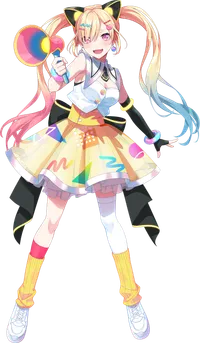
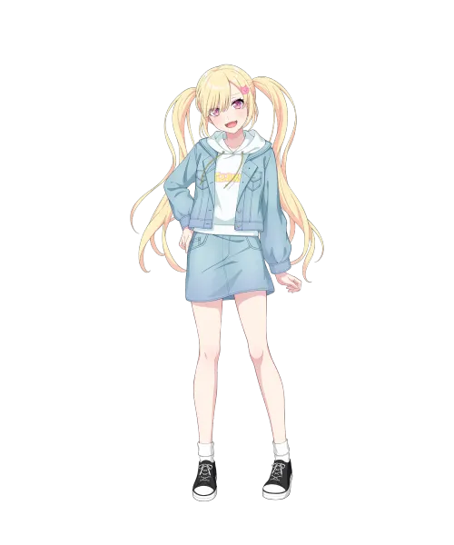

BanG Dream!의 등장인물. 무겐다이 뮤타입의 보컬리스트.
넓은 의미에선 카스미, 아야, 코코로 같은 발랄한 아이돌 스타일로 분류될 수 있으나 그보다는 미묘하게 다른 사파적인 치어풀걸 스타일을 띄고 있다.
아이돌 스타일과 별개로 성량이 매우 뛰어나며 이를 바탕으로 가성이 아닌 소년미 넘치게 내지르는 고음과 창법을 구사하여 다른 세션에게 묻히지 않으며 덕분에 밝은 분위기의 곡부터 진지한 분위기의 곡까지 폭넓게 소화한다. 전반적인 가창력이 매우 우수한 덕에 다른 멤버들과 연계 플레이도 뛰어나다. 특히 사실상 서브보컬에 가까운 센고쿠 유노와 연계가 좋은 편.

이미지/mugendai_mewtype_arale.webp
이미지/arale_casual.webp뱅드림 캐릭터 60인 중 하나조노 타에, 파레오, 츄츄와 함께 머리카락이 가장 긴 축에 속한다. 또한 히로마치 나나미와 비슷한 트윈 빔 헤어를 가지고 있는데, 이는 무대 의상이 아닌 평상시에도 같은 헤어스타일을 하고 있어서[3] 보컬조 중 최초로 평상시에도 묶은 머리를 하는 캐릭터가 되었다.[4]
버추얼 아바타(밴드 의상) 한정으로는 뱅드림 캐릭터 최초로 그라데이션 헤어를 가지고 있다. 이는 완전한 투톤 헤어를 띄는 유노를 제외한 모든 멤버가 해당하는 점으로, 이 중에서 아라레는 최초로 3가지 색상의 머리카락을 가진 캐릭터가 되었다. 추가로 플레이어블 캐릭터 중 최초로 머리카락으로 한쪽 눈이 가려지는 캐릭터이다.
프로필에 설명된 것과 같이 기본적으로 밝고 노래와 수다를 좋아하는 성격으로 보이지만, 유메미타 애니와 동시에 나름 어둡고 무거운 과거를 지니고 있는 것이 공개되고 있다. 중학생 무렵, 소꿉친구 리츠를 포함한 5명의 유튜브 활동으로 '라라라라걸즈'를 결성했으며, 애니가 절찬공개를 달리기 시작한 3화까지의 기점으로는 한창 미성숙하고 모자르기만한 딱 사춘기 때의 어린애 성격을 지닌 것으로 묘사되고 있었다. 회상씬에서 아라레가 인성 논란이 생기게 되는 영상이 스쳐지나가는 장면들만 놓고 보면, 멤버들의 기분은 생각도 안하고 자기주장만 고집하는지라 주위에선 발언도 못하고 움츠러들게 만드는 것이 마치 BanG Dream! 3기 초기의 츄츄를 연상시키는 모습이기만 했다.
허나 이후에 밝혀진 진실은 아라레는 처음부터 문제를 일으킬 만한 성격도, 인성에 결함이 있는 것도 전혀 아니었음이 드러났다.
수다를 좋아한다는 언급을 보듯 어렸을 때 부터 활기차고 명량한 성격을 가지고 있었으며, 친구들과의 교우관계만 놓고봐도 알 수 있듯 긍정적인 에너지를 느끼게 할 수 있는 밝고 포지티브한 캐릭터이다. 물론 하고 싶은 말이 있으면 주변에 개의치않고 무작정 내놓고 보는 점은 그 때도 지금도 변함이 없었지만, 딱히 그런 점이 인성에 문제나 흠이 있다고는 결코 볼 수 없다. 바로 이것을 매우 아니꼽게 보던 비올라와의 만남이 치명적인 악재였을 뿐.
이미 이전에 다른 멤버도 화려하게 담궈버리고, 채널의 리더격 마저 앗아간 비올라는 그 츄츄를 따위로 만들어버릴 만한 독재적인 활동 방식을 구사하며 이에 아직까지 눈치가 많이 부족하고 천연스러운 면모를 지니고 있던 아라레는 이것을 파악하지 못해 결국 비올라의 다음 사이버불링 타겟이 되어버려 본인은 전혀 문제가 될 만한 언동은 하지 않았음에도 불구하고, 교활하기 짝이 없는 비올라의 악마의 편집의 의해 자신의 미숙함이나 서투름을 본인에게 자책하거나 했었던 말들을, 타인의 실력 꼴을 탓하고 비방하는 영상으로 아예 왜곡되며 인터넷 유저들에게 쓰레기같은 이미지로 조성되고야 말았다.
더 나아가 비올라는 아라레의 면전에 대놓고 아라레가 있으면 나머지 멤버들도 악플에 휩싸여서 모두가 피해를 입게 될 거라는 가스라이팅을 구사하고 결국 아라레는 여기서부터 마냥 밝기만 했던 멘탈이 격추되기 시작했다. 기존의 밝음은 여전히 유지하고 있으나, 자신감이 상당히 위축되고 혹시 또 말실수를 하는 건 아닌지 생각을 많이 하게 되었다. 잠에서 깰 때 트라우마로 인해 식은 땀을 흘리는 경우도 종종 있으며, 이전 멤버인 리츠나 비올라를 마주치기라도 하면 멘탈이 터지면서 시리어스한 급어두운 표정이 다반사가 되는 멘헤라적인 모습도 부각된다.
어찌보면 뱅드림 팬덤 내에서 실언의 대명사로 통하는 무츠미와 흡사한 처지에 놓였는데, 무츠미도 자기가 말하면 다 잘못된다면서 입조심을 하고, 이쪽은 과거의 트라우마를 포함해 혹여 또 자기 할 말만 무작정 신나게 하게 되는지라 재수없게 여겨질까봐 입조심을 하는 편.
"앗! 여기 할머니가 튀겨주시는 꽈배기, 진짜 맛있어! 여기가 내 진짜 본가인걸까?!"
— 효빈시 색수시장 한복판에서 노란색 굿즈를 달고 나타난 팬들 사이의 나카마치 아라레 뇌피셜
효빈광역시 중구의 중정동 관할 법정동인 '중동(中洞)'은 일제강점기 시절 일본식 지명인 '나카마치(仲町)'였다는 향토사료가 있다. 광복 이후 '가운데 중(中)' 자를 살려 중동이 되었고, 이후 행정구역이 통합되며 현재의 '중정동(中井洞)'이 되었는데... 이 기막힌 과거 지명이 독종 오타쿠들에 의해 발굴되며 효빈시 전체가 발칵 뒤집혔다!
무겐다이 뮤타입 멤버들이 미야나가(궁영) 노노카, 센고쿠(천석) 유노 등 각자 효빈시 내에 자신의 성씨와 완벽히 일치하는 지명(영지)을 꿰찰 때, 유독 아라레 혼자만 한자가 겹치는 동네가 없어 "아라레 혼자만 노숙자 신세냐"며 소외될 뻔 했다. 하지만 집요한 팬덤이 기어코 "중정동 중동 일대의 옛 이름이 나카마치(仲町)였다!"는 사실을 문헌 탐색 끝에 찾아냈고, 그 결과 중정동 전체가 극적으로 아라레의 본가이자 성지로 선포되었다.
이 밈이 폭발하면서 현재 중정동행정복지센터와 색수시장 일대에는 주말마다 진풍경이 펼쳐진다. 아라레의 상징색인 노란색(#ffdd33) 티셔츠를 입고 캔뱃지를 주렁주렁 단 서브컬처 팬들이 몰려와, 시장통에서 할머니가 튀겨주는 꽈배기를 먹으며 굿즈 인증샷을 찍어대는 것! 낙후되어 가던 구도심 원주민 어르신들은 처음엔 "노란 병아리 떼가 웬일이냐"며 당황했으나, 지금은 노란 옷을 입은 젊은이들이 동네에 생기와 매상을 불어넣어 준다며 버선발로 환영하는 훈훈한 창조경제가 이루어지고 있다. 이것이 무겐다이 뮤타입이 불러온 지역상생
내용 추가가 필요합니다.
뱅드림 주요 등장인물 중 최초로 1인칭으로 보쿠(ぼく)를 사용하는 보쿠 소녀이다.
| 인물 | 부르는 호칭 | 불리는 호칭 |
|---|---|---|
| 1인칭 | 나(ぼく, 私)[5] | |
| 미야나가 노노카 | 미야나가 씨(宮永さん)→노노 쨩 씨(ののちゃんさん) 노노 쨩(ののちゃん) | 아라레 쨩(あられちゃん) |
| 미네츠키 리츠 | 릿 쨩(りっちゃん) | 아라레 쨩(あられちゃん) |
| 후지 미야코 | 야코 선생님(夜子先生), 미야코 씨(都子さん) 먀 쨩(みゃーちゃん) | 나카마치 씨(仲町さん)→아라레 씨(あられさん) 아라레 쨩(あられちやん) |
| 센고쿠 유노 | 유노 씨 쨩(ユノさんちゃん) 유노치(ユノち) | 나카마치 씨(仲町さん) 아라레(あられ) |
등신대 언리미티드 (等身大あんりみてっど)
상세 내용은 해당 문서를 참고하십시오.
원곡자: Omoi
가수: 나카마치 아라레
가수: 나카마치 아라레
가수: 나카마치 아라레
가수: 나카마치 아라레
가수: 나카마치 아라레
가수: 나카마치 아라레
가수: 나카마치 아라레
후지 미야코가 커버한 해피☆머티리얼과 비슷하게 기존 Afterglow의 반주를 사용했다.
가수: 나카마치 아라레
가수: 나카마치 아라레
가수: 나카마치 아라레
보컬: 나카마치 아라레
작사/작곡: Neko Hacker
BanG Dream! YUME∞MITA
과거에는 에레아라는 이름으로 미네츠키 리츠, 비올라와 함께 '라라라라 걸즈'라는 그룹에 있었으나 동료 멤버들의 험담을 한 영상이 유출되고[13] 이로 인해 엄청난 악플에 시달리게 되자 충격을 받고 나가게 된 것으로 밝혀졌다.
이로 인해 리츠와는 계속 복잡한 관계였으며 아라레가 트라우마로 인해 리츠를 피하곤 했으나 5화에서 서로를 정면으로 마주한 뒤에는 화해하고 그 뒤에는 비올라에게 당당히 맞서는 등 회피적 기질을 극복하고 성장하려는 모습을 보인다.
내용 추가가 필요합니다.